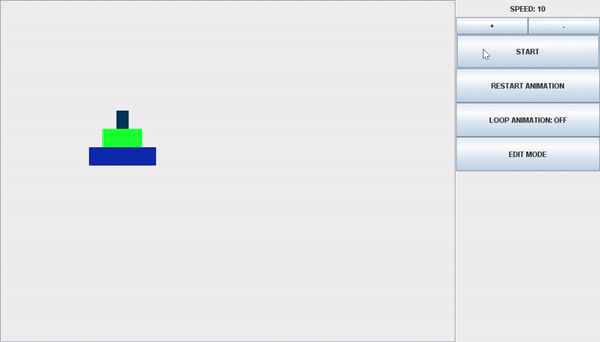
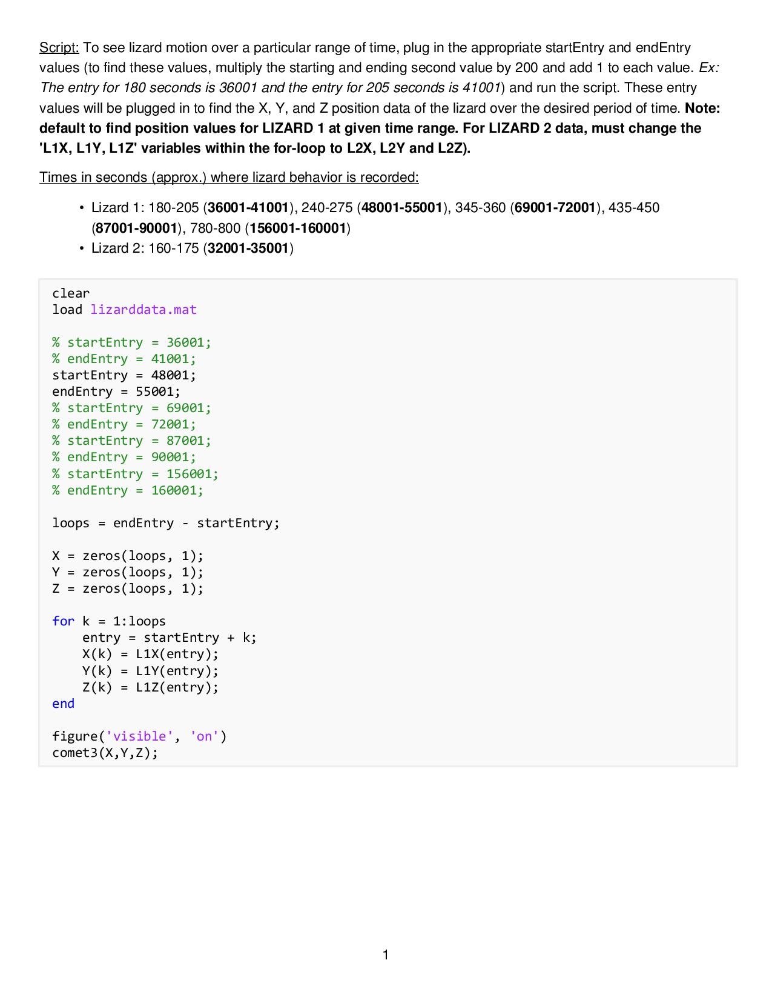
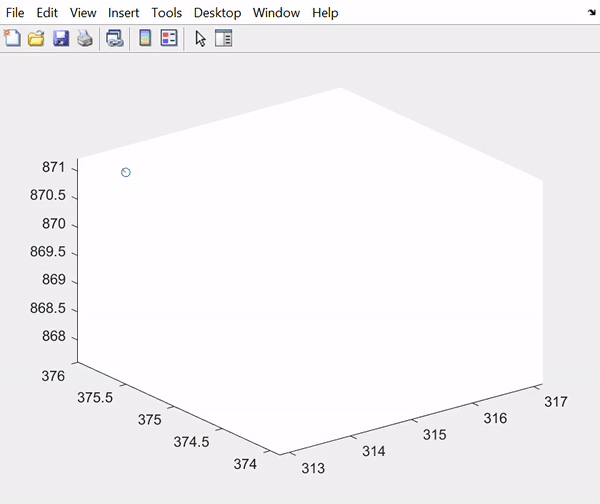

Partner: Nicole Danuwidjaja
For academic privacy reasons, please contact me for access to the github repository for this project.
Sample input: toh3.txt
canvas 145 50 410 220 shape disk1 rectangle shape disk2 rectangle shape disk3 rectangle motion disk1 1 190 180 20 30 0 49 90 1 190 180 20 30 0 49 90 motion disk1 1 190 180 20 30 0 49 90 25 190 180 20 30 0 49 90 motion disk2 1 167 210 65 30 6 247 41 1 167 210 65 30 6 247 41 motion disk2 1 167 210 65 30 6 247 41 57 167 210 65 30 6 247 41 motion disk3 1 145 240 110 30 11 45 175 1 145 240 110 30 11 45 175 motion disk3 1 145 240 110 30 11 45 175 121 145 240 110 30 11 45 175 motion disk1 25 190 180 20 30 0 49 90 35 190 50 20 30 0 49 90 motion disk1 35 190 50 20 30 0 49 90 36 190 50 20 30 0 49 90 motion disk1 36 190 50 20 30 0 49 90 46 490 50 20 30 0 49 90 motion disk1 46 490 50 20 30 0 49 90 47 490 50 20 30 0 49 90 motion disk1 47 490 50 20 30 0 49 90 57 490 240 20 30 0 49 90 motion disk1 57 490 240 20 30 0 49 90 89 490 240 20 30 0 49 90 motion disk2 57 167 210 65 30 6 247 41 67 167 50 65 30 6 247 41 motion disk2 67 167 50 65 30 6 247 41 68 167 50 65 30 6 247 41 motion disk2 68 167 50 65 30 6 247 41 78 317 50 65 30 6 247 41 motion disk2 78 317 50 65 30 6 247 41 79 317 50 65 30 6 247 41 motion disk2 79 317 50 65 30 6 247 41 89 317 240 65 30 6 247 41 motion disk1 89 490 240 20 30 0 49 90 99 490 50 20 30 0 49 90 motion disk2 89 317 240 65 30 6 247 41 185 317 240 65 30 6 247 41 motion disk1 99 490 50 20 30 0 49 90 100 490 50 20 30 0 49 90 motion disk1 100 490 50 20 30 0 49 90 110 340 50 20 30 0 49 90 motion disk1 110 340 50 20 30 0 49 90 111 340 50 20 30 0 49 90 motion disk1 111 340 50 20 30 0 49 90 121 340 210 20 30 0 49 90 motion disk1 121 340 210 20 30 0 49 90 153 340 210 20 30 0 49 90 motion disk3 121 145 240 110 30 11 45 175 131 145 50 110 30 11 45 175 motion disk3 131 145 50 110 30 11 45 175 132 145 50 110 30 11 45 175 motion disk3 132 145 50 110 30 11 45 175 142 445 50 110 30 11 45 175 motion disk3 142 445 50 110 30 11 45 175 143 445 50 110 30 11 45 175 motion disk3 143 445 50 110 30 11 45 175 153 445 240 110 30 11 45 175 motion disk1 153 340 210 20 30 0 49 90 163 340 50 20 30 0 49 90 motion disk3 153 445 240 110 30 11 45 175 161 445 240 110 30 0 255 0 motion disk3 161 445 240 110 30 0 255 0 302 445 240 110 30 0 255 0 motion disk1 163 340 50 20 30 0 49 90 164 340 50 20 30 0 49 90 motion disk1 164 340 50 20 30 0 49 90 174 190 50 20 30 0 49 90 motion disk1 174 190 50 20 30 0 49 90 175 190 50 20 30 0 49 90 motion disk1 175 190 50 20 30 0 49 90 185 190 240 20 30 0 49 90 motion disk1 185 190 240 20 30 0 49 90 217 190 240 20 30 0 49 90 motion disk2 185 317 240 65 30 6 247 41 195 317 50 65 30 6 247 41 motion disk2 195 317 50 65 30 6 247 41 196 317 50 65 30 6 247 41 motion disk2 196 317 50 65 30 6 247 41 206 467 50 65 30 6 247 41 motion disk2 206 467 50 65 30 6 247 41 207 467 50 65 30 6 247 41 motion disk2 207 467 50 65 30 6 247 41 217 467 210 65 30 6 247 41 motion disk1 217 190 240 20 30 0 49 90 227 190 50 20 30 0 49 90 motion disk2 217 467 210 65 30 6 247 41 225 467 210 65 30 0 255 0 motion disk2 225 467 210 65 30 0 255 0 302 467 210 65 30 0 255 0 motion disk1 227 190 50 20 30 0 49 90 228 190 50 20 30 0 49 90 motion disk1 228 190 50 20 30 0 49 90 238 490 50 20 30 0 49 90 motion disk1 238 490 50 20 30 0 49 90 239 490 50 20 30 0 49 90 motion disk1 239 490 50 20 30 0 49 90 249 490 180 20 30 0 49 90 motion disk1 249 490 180 20 30 0 49 90 257 490 180 20 30 0 255 0 motion disk1 257 490 180 20 30 0 255 0 302 490 180 20 30 0 255 0
Sample output:
I wrote this fairly simple program while helping with research at Union College alongside Professor Leo J. Fleishman, who studies animal behavior--in particular, movement and vision of the lizard genus Anolis. For this project, I was asked to create a 3D graph tracking X, Y and Z movement of subjects in their enclosure over time. For this program, I learned the basics of MATLAB in order to produce a Live Script that researchers can use to track movement over specific periods of time using a table of data.
Live script:
Output:
